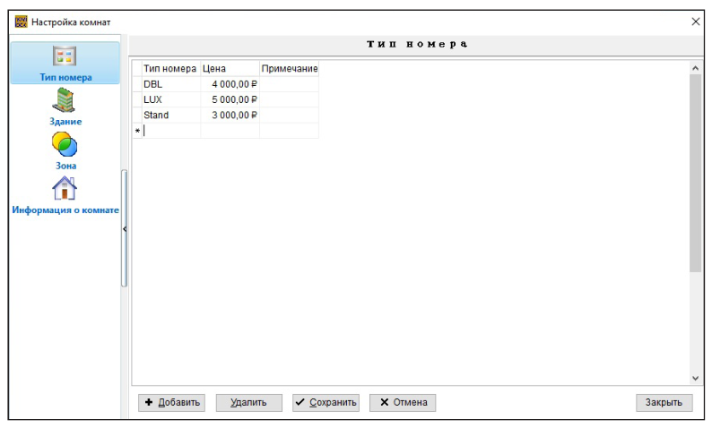
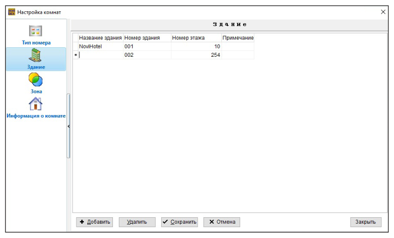
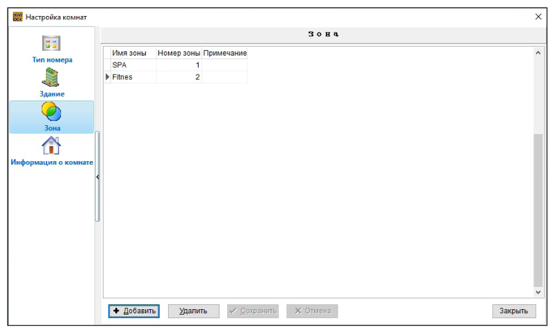
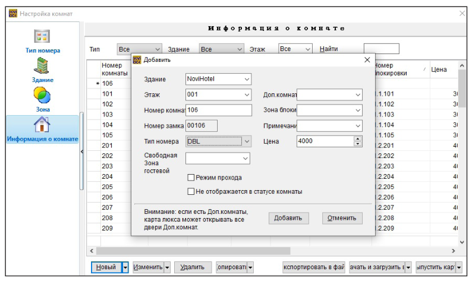
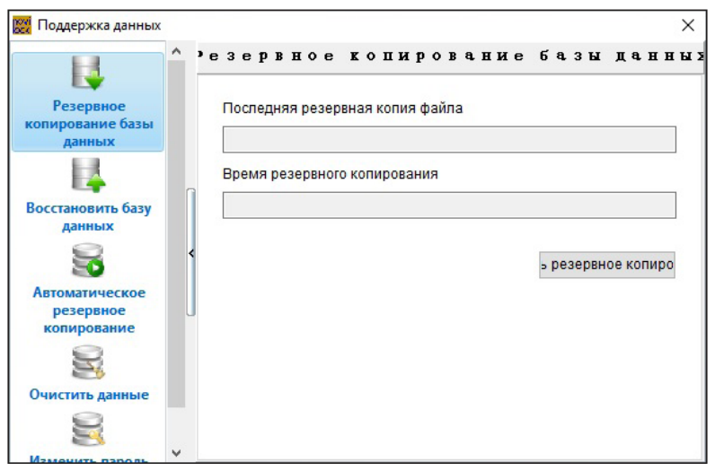

Создание номерного фонда
Руководство пользователя · Электронные замки Novilock™ Classic Slim


СОЗДАНИЕ НОМЕРНОГО ФОНДА
Тип номера Перейдите в меню Управление номерами и выберите пункт Тип номера. Нажмите кнопку Добавить для создания нового типа номера, введите информацию в тип номера, цена, примечание после чего нажмите кнопку Сохранить для завершения действaия. Чтобы изменить, удалить тип номера нажмите Удалить. После внесения изменений нажмите кнопку Сохранить для завершения действия (Рис. 30).
Здание Перейдите в меню Управление номерами и выберите пункт Здание. Нажмите кнопку Добавить и введите информацию в пункты Название здания, Количество этажей, Примечания и нажмите кнопку Сохранить для завершения действия или нажмите кнопку Закрыть для выхода из данного пункта меню без внесения изменний. Чтобы изменить, удалить здание нажмите Удалить. После внесения изменений нажмите кнопку Сохранить для завершения действия (Рис. 31).

Зона Это может быть территория или помещение для дополнительного прохода гостей, например спортзал, бассейн, парковка т. д. Перейдите в меню Управление номерами и выберите пункт Зона, выберите Добавить, или Удалить, чтобы ввести/редактировать/удалить информацию о зоне.
Обратите внимание
Каждый замок может хранить информацию о пяти зонах одновре менно. При выдаче ключа можно дополнительно указать, какие зо ны открывает ключ гостя ее можно добавлять при поселении гостей или настроить ее работу по умолчанию установив галочку Свобод ная зона гостевой. Например, можно создать зону Сауна и при вы пуске ключа гостя указывать, что его ключ открывает зону сауны. Программирование зоны в замке см. Установка зоны стр. (СКРИН 20)

Информация о комнате Перейдите в меню Управление номерами и выберите пункт Информация о комнате для вызова окна. Нажмите кнопку Новый и выберите для этого номера Здание, Этаж, Зона, Номер комнаты, Тип номера. Если в пункте типа замка выбрать Дополнительная комната, необходимо также выбрать номер двери в комнате. Введите номер комнаты и при необходимости проставьте отметки напротив пунктов Режим прохода (замок будет отрываться и закрываться только по карте) и Не указан в списке на регистрацию (для служебных помещений). Для завершения действия нажмите кнопку Сохранить. Функция Копировать номер позволяет вводить информацию сразу о нескольких номерах, если номера находятся на одном этаже. При нажатии на кнопку Копировать номер номер комнаты увеличивается, а номер здания и этаж не изменяются. Если
в процессе увеличения встречается тот же самый номер, программа автоматически его пропускает. Команда дополнительная комната создает дополнительные двери комнаты, присваивая им буквы от A до Z на основе выбранного номера. Функция Копировать этаж помогает установить такие же настройки у нового этажа, как у исходного этажа. Функци Изменить, выберите номер и нажмите кнопку Изменить, измените информацию о номере и для завершения действия нажмите кнопку Сохранить. Функция Загрузить все и Загрузить выбранное в Handset позволяет загрузить созданные номера в программатор замков, настройка замков смотри (Рис. 33).

Резервная копия БД После создания номерного фонда рекомендуем сделать резервную копию БД отеля. Для этого войдите в главное меню и нажмите База данных, затем Резервное копирование базы данных, далее Резервное копирование и укажите место или папку куда будет сохранена БД, затем нажмите Сохранить. Для восстановления БД выберите Восстановить базу данных, подтвердите действие, так как ваша база будет удалена при восстановлении, далее укажите тип базы для восстановления. Затем укажите где находиться файл резервной копии и нажмите Далее. Если ваша учетная запись защищена паролем - введите пароль пользователя ILMS Novilock, если пароля нет нажимите Готово еще раз и подтвердите действие (Рис. 34).